Build a company. Let AI run it.
Mero turns an idea into a real business: a brand, a structurally-editable website, and an AI workforce with explicit permissions that operates the company under the owner's supervision.
Want to actually use it?
- Clone the repo and check out
claude/wizardly-noether-ydvfj2 npm installcp .env.example .envand fill inDATABASE_URL/AUTH_SECRET(optionallyANTHROPIC_API_KEYfor real AI generation)npx prisma migrate devnpm run dev— openhttp://localhost:3000
Landing page
The marketing entry point — idea → build → workforce → run → optimize.
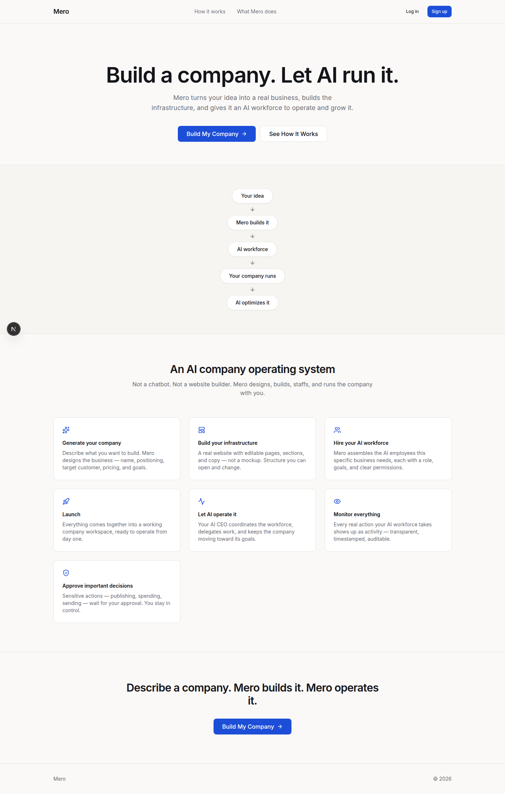
Onboarding — reviewing the generated plan
Every field is editable before the company is built. No AI provider was connected in this run, so it's honestly labeled as template-filled rather than pretending to be AI-generated.
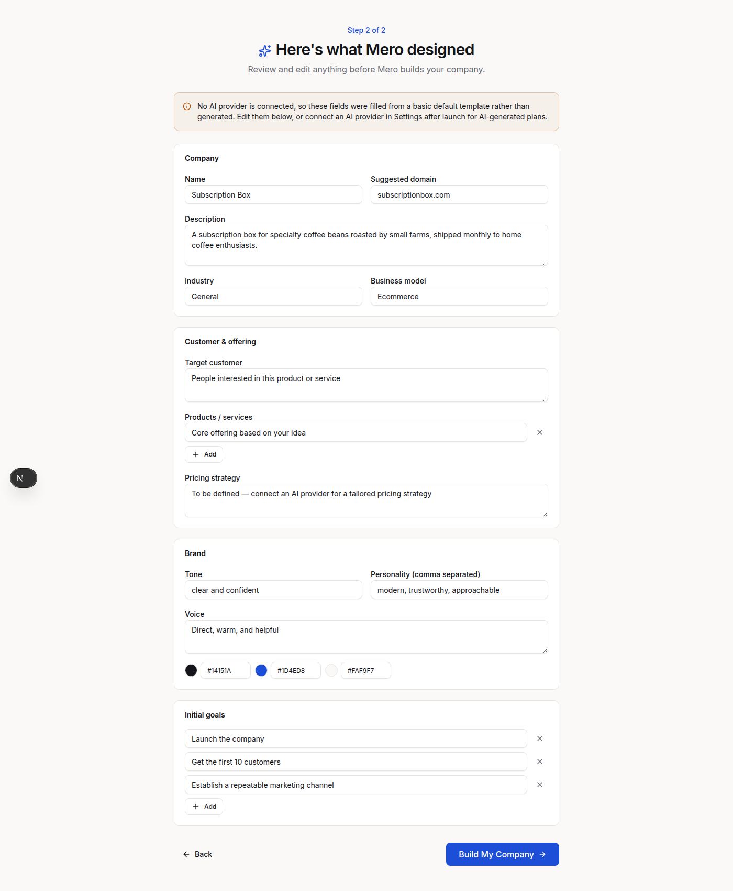
Live build sequence
Each step only checks off once the backend actually finishes it — real progress, not a timed animation.
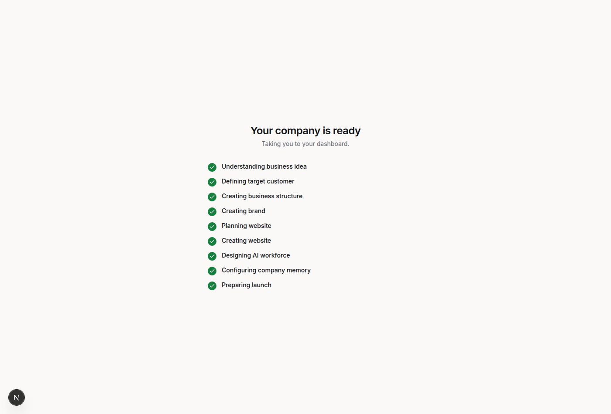
Overview dashboard
Real AI CEO briefing generated from actual task/activity data, and metrics that show "connect your data sources" instead of fabricated numbers.
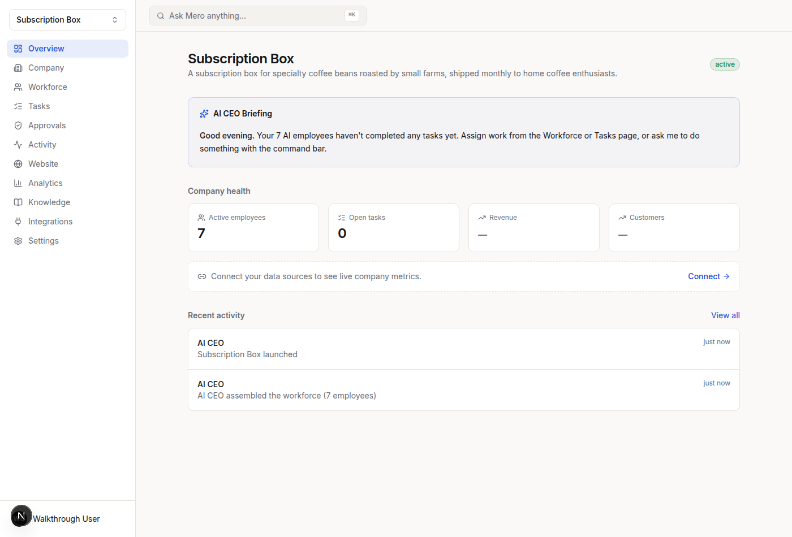
Workforce
The AI employees Mero assembled for this specific business — not every role for every company.
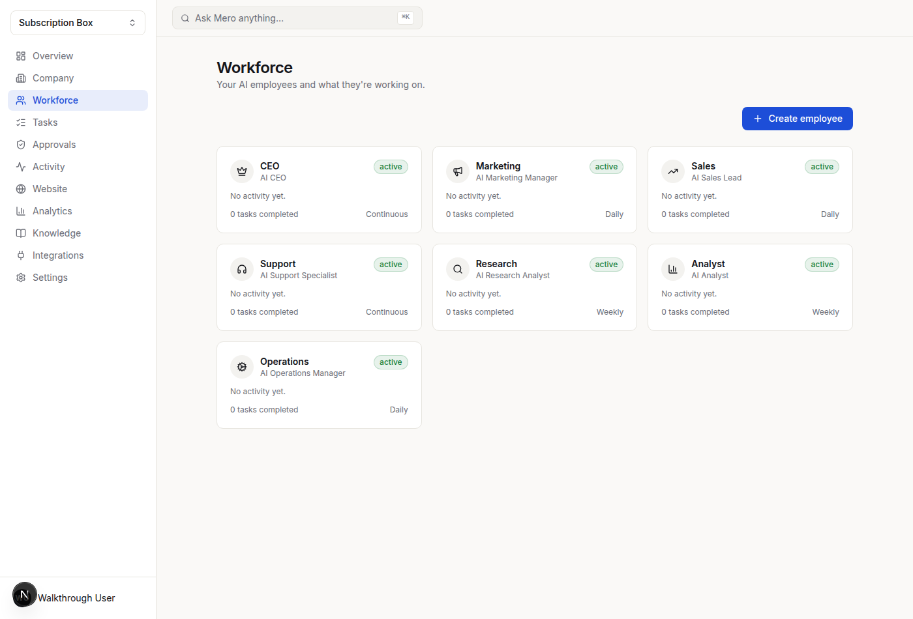
Employee chat
Real chat backed by the AI provider abstraction. With no API key connected, it says so plainly instead of faking a reply.
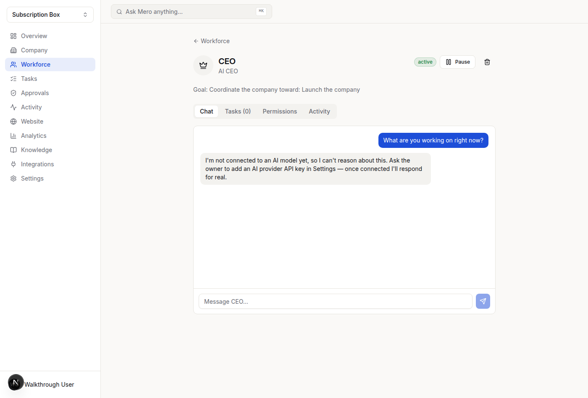
Website builder
A real page tree and live preview backed by the database, with an AI command box that edits the actual structure.
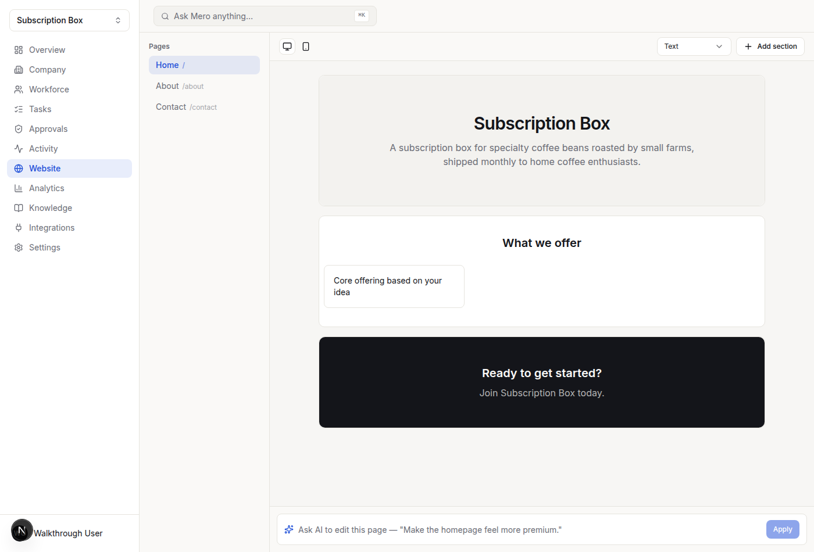
Knowledge
Company memory the AI workforce actually reads from, editable by the owner.
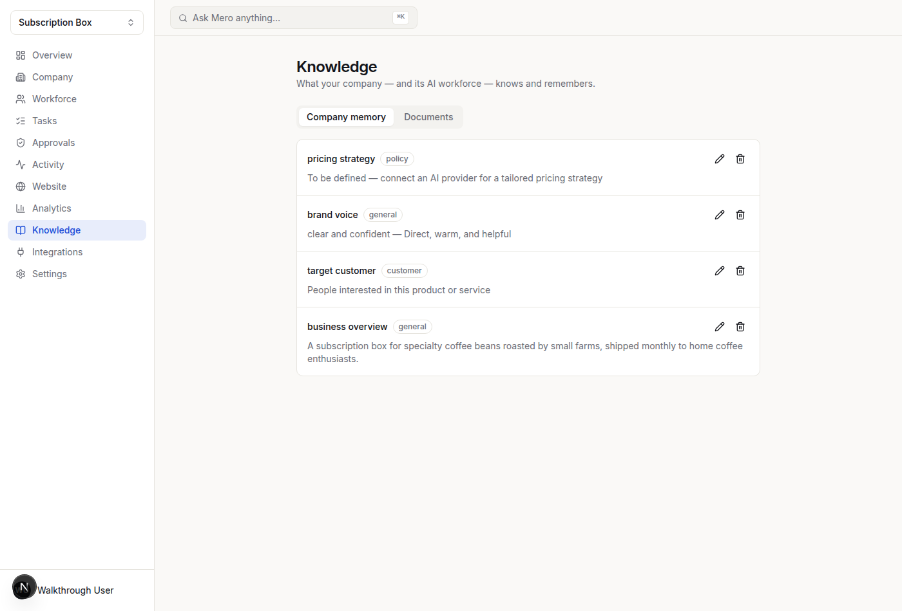
Integrations
Every provider is honestly marked "Not connected" — no integration is faked.
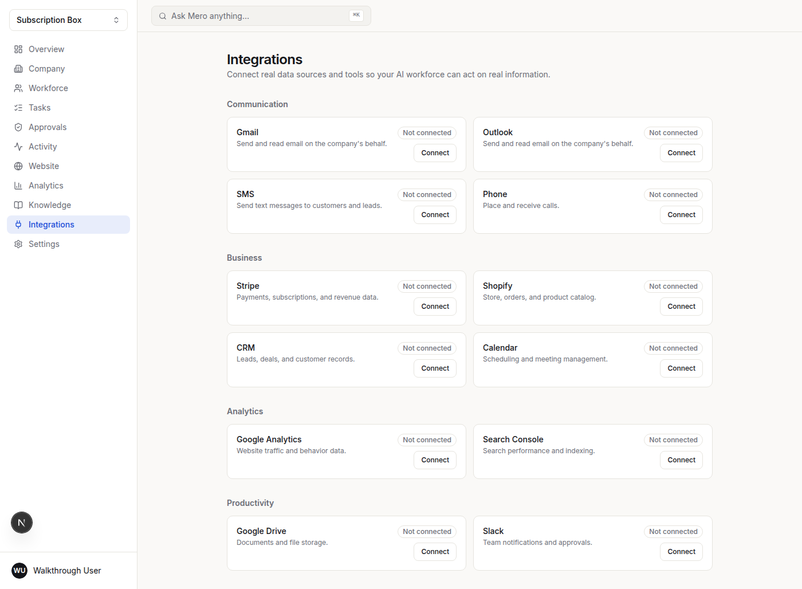
Global command bar
⌘K routes natural-language commands through the AI CEO orchestrator.
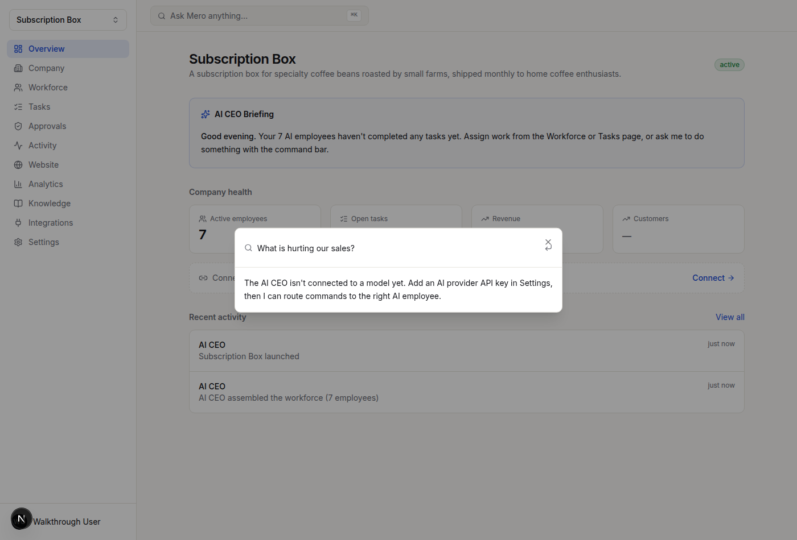
Settings
Shows the real AI provider connection status — no hidden state.
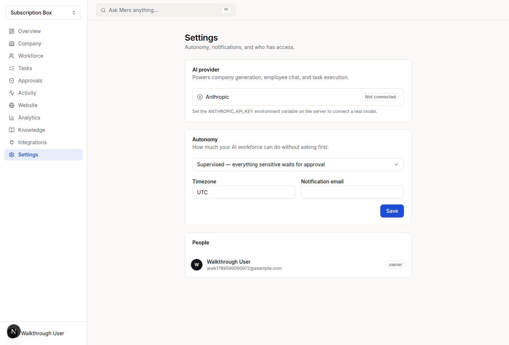